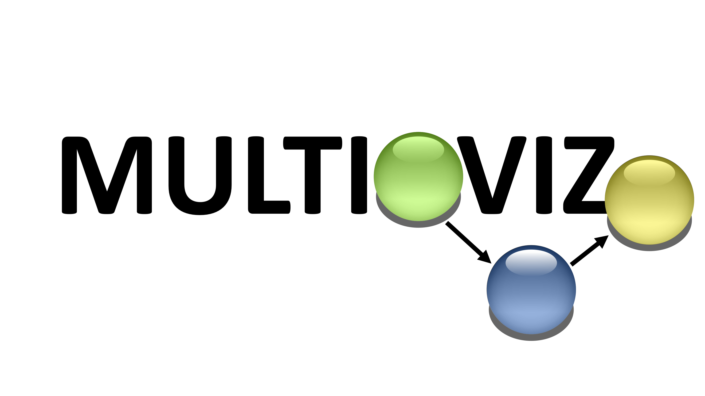

QUICKSTART
Method Integration:
The multioviz package contains a runMultioviz() function that allows users to connect the perturbation and visualization capabilities of the multioviz platform with their own ranking model. The function can take in 0 parameters to run the demo, 3 parameters runMultioviz(X, y, mask) to run user data with BANNs, and 4 parameters runMultioviz(X, y, mask, userScript) to run user data with user model.
- Write script with a "runModel()" function that (a) Contains arguments for X, y, and mask (b) Runs your ranking model (c) Returns a list of length 3 with scores for two molecular levels and a mapping between nodes in ML1 and ML2.
- Save X, y, and mask files as .rda files.
- Load in X, y, and mask matrices.
- Save path to your script as a variable.
- Run app with runMultioviz(X, y, mask, userScript) function.
Perturbation:
- Click "Edit" to perturb nodes and edges
- Click "Rerun Model" to generate new network: